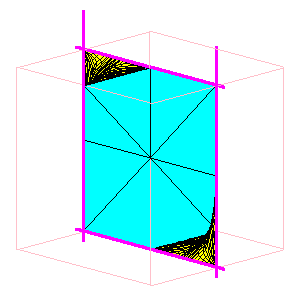

Discriminant coamoebas through homologyMikael Passare† and Frank SottileUnderstanding the complement of the coamoeba of a (reduced) A-discriminant is one approach to studying the monodromy of solutions to the corresponding system of A-hypergeometric differential equations. Nilsson and Passare described the structure of the coamoeba and its complement (a zonotope) when the reduced A-discriminant is a function of two variables. Their main result was that the coamoeba and zonotope form a cycle which is equal to the fundamental cycle of the torus, multiplied by the normalized volume of the set $A$ of integer vectors. That proof only worked in dimension two. Here, we use simple ideas from topology to give a new proof of this result in dimension two, one which can be generalized to all dimensions. |
 |